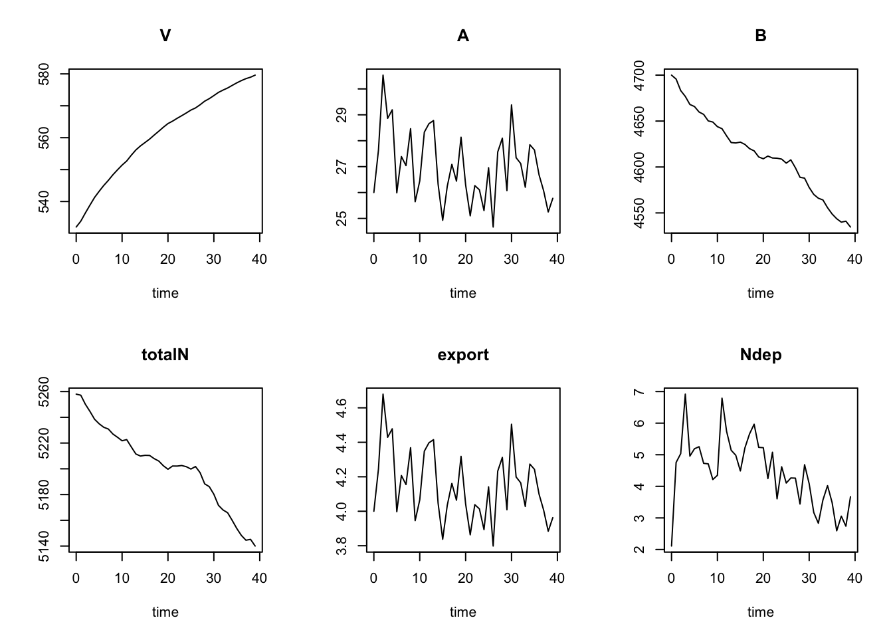

Chapter 4 Bring Data Into A Model to Address a Question or Two
A curious thing is happening to Hubbard Brook and to many forests–nutrient exports have continued to decline. We would expect that as a forest aggrades, nutrient exports decline, but that once it reaches something like an equilibrium, nutrient exports start to come back up.
To investigate this, and other questions, we will use real data. To do that, we need to (i) bring it into R, (ii) clean it up and wrangle it a bit, (iii) reveal observed trends, and (iv) incorporate data into our model.
We might organize our thinking in a semi-structured manner:
- What data would we like? To determine that, we have to revisit a model, perhaps the original description by Bormann and colleagues (1977), or something else. We need data to
- verify patterns, such as N deposition
- model hypothesized mechanisms, such as the effect of temperature.
- With these ideas in mind, we can move out to find relevant online public data. As we do so, we will need to consider whether we should use annual, monthly, or daily averages.
- Once we have data sets, to use it, we will start with simple steps.
- import it into R.
- clean data (arrange, filter)
- convert to appropriate units
- display with graphs (perhaps summarize with statistics)
- To model hypothesized mechanisms,
- we will learn how to use data in
ode()(deSolvepackage), - parameterize our model, and calibrate it.
- we will learn how to use data in
4.1 What data?
We would like data relevant to the rates of fluxes in the Hubbard Brook nitrogen cycle. Let’s start with annual precipitation and N deposition, and stream export.
4.2 Bringing data into R, and wrangling it
Good science is replicable. Best practice in modeling and data analysis recommends using publicly available data, and using publicly availble code to manipulate the data. We should avoid introducing unreplicable errors that occur when we make one-time changes to a spreadsheet by hand, through user intervention. We should find data in a public repository, download it, and make any adjustments to it using an R script.
A great deal of data that we use is saved in ASCII format or as a text file. This format is very widely used and very simple, and so can be opened in many different kinds of applications, including any word processor or spreadsheet application. Such data may have different delimiters, that is, symbols that separate values in adjacent columns. A very common delimiter is the comma, which results in a CSV file. A CSV file is an ASCII file in which Values are Separated by Commas. Spaces or tabs may also be used. Another format is fixed width, in which each variable or column is allocated a particular number of characters.
R has lots of ways to import data. Here, we’ll use one such function, read.csv. If we had a data set named “myfile.csv”, we could import it (or “read it”) into R thus:
If your data do not column headers (i.e. column labels), then you should tell R.
If your data file begins with two lines of notes that you shouldn’t include, then you should tell R.
Let’s assume that you brought some data in, and are ready to investigate it. In lieu of real data, we will just make some up: 30 years worth of annual total N deposition and precipitation.
myDat <- data.frame(
year=1:30,
Ndep = runif(n=30, min=.2, max=1.2),
precip=rgamma(n=30, shape=2, scale=4)
)In order to help make sure the data set is in the form we expect, we can run a few functions to see if it the expected number of rows and columns, and that the variables are of the type we expect. For instance, if the raw data were formatted in a manner we did not expect, it may import as a single column, instead of many, or as a bunch of character vectors, rather than numeric or whatever we intended.
## [1] 30 3## [1] "year" "Ndep" "precip"## 'data.frame': 30 obs. of 3 variables:
## $ year : int 1 2 3 4 5 6 7 8 9 10 ...
## $ Ndep : num 0.996 0.525 0.738 1.063 0.394 ...
## $ precip: num 6.11 6.67 2.12 7.73 3.61 ...## year Ndep precip
## Min. : 1.00 Min. :0.2213 Min. : 1.524
## 1st Qu.: 8.25 1st Qu.:0.4906 1st Qu.: 3.403
## Median :15.50 Median :0.7782 Median : 5.116
## Mean :15.50 Mean :0.7151 Mean : 8.962
## 3rd Qu.:22.75 3rd Qu.:0.9206 3rd Qu.:14.566
## Max. :30.00 Max. :1.1848 Max. :29.101As always, if you need more more information about R, you can ask for it.
In addition to numerical descriptions, we often would like to look at visual displays of data, including, for instance, histograms and scatter plots.
## graph stuff using the ggplot2 package
## Google 'ggplot2' for good help pages
ggplot(data=myDat, aes(x=precip)) + geom_histogram()
We can add a column using mutate() from the dplyr package. This allows us to make changes (mutate) a data frame by transforming columns already in the data frame to make new columns.
This added a variable called export, and kept all of the original variables as well.
This is particularly handy if we need to transform the units of data we bring in, for example, from g\(\cdot\)m\(^-2\) to kg\(\cdot\)ha\(^-1\)
## Convert units
## Step 1. figure out what the conversion factor is
## grams to kilograms: how many kilograms per gram? 1/1000 kg/g
## 5 g = 5 g x 1/1000 kg/g = 0.005 kg
##
## convert area?
## 1 m^2 = ?? ha ? 1 ha = 100 m x 100 m; 1 ha = 10^4 m^2
## imagine our deposition data is in g/m^2
## convert to kg / ha
myDat <- mutate(myDat,
Ndep.kg = Ndep * 1/1000,
Ndep.kg.ha = Ndep.kg / (1/10^4)
)
summary(myDat)## year Ndep precip export
## Min. : 1.00 Min. :0.2213 Min. : 1.524 Min. :0.02075
## 1st Qu.: 8.25 1st Qu.:0.4906 1st Qu.: 3.403 1st Qu.:0.12123
## Median :15.50 Median :0.7782 Median : 5.116 Median :0.18677
## Mean :15.50 Mean :0.7151 Mean : 8.962 Mean :0.30621
## 3rd Qu.:22.75 3rd Qu.:0.9206 3rd Qu.:14.566 3rd Qu.:0.38420
## Max. :30.00 Max. :1.1848 Max. :29.101 Max. :1.32728
## Ndep.kg Ndep.kg.ha
## Min. :0.0002213 Min. : 2.213
## 1st Qu.:0.0004906 1st Qu.: 4.906
## Median :0.0007782 Median : 7.782
## Mean :0.0007151 Mean : 7.151
## 3rd Qu.:0.0009206 3rd Qu.: 9.206
## Max. :0.0011848 Max. :11.8484.3 Stream chemistry data, for the Hubbard Brook LTER
Source: Hubbard Brook LTER
Likens G. 2016. Chemistry of Streamwater at the Hubbard Brook Experimental Forest, Watershed 6, 1963 - present. Environmental Data Initiative. https://doi.org/10.6073/pasta/87be2e19d30e4e1c60abf129d34a9af6. Dataset accessed 3/08/2019.
Units of chemistry are mg/L, units of stream flow are mm/month over the entire watershed.
# read data
wc <- read.csv("data/w6_stream_chem.txt")
# names(wc) # show names
# combine year with month so ym = years and fractions of year
wc$ym <- wc$year + wc$mo/12
# rearrange data in the long format ('gather' variables into one col.
wcg <- gather(wc, key=variable, value=value, flow:SiO2) %>% filter(value != -3)
# show names
#names(wcg)
#plot it
ggplot(wcg, aes(ym, value) ) + geom_line() + facet_wrap(~variable, scales="free_y")These data are monthly - I want annual data, and only certain years and only the nitrogen.
## -3 is a placeholder for missing data in these data.
# remove those, and use just NO3 and NH4 in certian years
wcf <- filter(wc, (NO3 != -3 | NH4 != -3) & year >= 1970 & year < 2018)Make sure I use the mass of N only not the mass of NO\(_3\) and NH\(_4\). Also, I want kg N / ha. From the Hubbard Brook website, we get “Daily export values (in g/ha-mo) are derived by multiplying daily streamflow amounts (in mm) for watershed 6, by the concentration of solutes (in mg/L)…. Measured and estimated daily values are summed to produce monthly export….”
wcf <- mutate(wcf,
N = 14/18*NH4 + 14/62 * NO3,
mo.TN = N * flow / 1000 # to convert g to kg
)
# flow is PER MONTH
# group by year and then summarize data by year
wcfg <- group_by(wcf, year)
wcfy <- summarise(wcfg,
ann.exp.TN.kg.y = sum(mo.TN*12),
ann.flow.mm.y = sum( flow ) )
ggplot(wcfy, aes(year, ann.exp.TN.kg.y)) + geom_line() +
labs(title="Why is N export going down?")snt <- read.csv("data/env_data_HB.csv")
snts <- spread(snt, key=factor, value=value)
snts <- mutate(snts,
retention = atmos.kgN.ha - ann.exp.TN.kg.y)\
snt <- gather(snts, key = factor, value=value, -year)
snt <- na.omit(snt)
ggplot(snt, aes(x=year, y=value)) + geom_line() + geom_smooth(span=.9) + facet_wrap(~factor, scales="free_y")4.4 Adding climate change
In this section we address in a small way these questions:
- What will climate change do in this forest?
- What will these changes do?
- How do we model the changes?
- How do we model the effects of these changes?
What will climate change do in this forest? Here is a short list of candidates:
- increase average temprature (or warmer winters or warmer summers).
- increase average annual precipitation.
- increase magnitude of extreme precipitation events.
- create more (or fewer?) ice storms.
Note that some of these changes are annual averages and some are discrete events. In this course, we will cover forcings that exert of continuous effect, such as an annual average, as well as discrete events.
Here we will focus on temperature and its effects.
Respiration is generally more sensitive to temperature than photosynthesis, across a wide range of temperatures. Therefore, any microbial process is likely to be more sensitive to changes in temperature than is carbon fixation, .
Which rates in the Hubbard Brook model might be most sensitive to temperature changes? Below, we’ll work through one example of how to use observed temperatures to alter net N mineralization rate.
We can start by bringing in daily temperature data from the Hubbard Brook LTER website. (Campbell, J. and Bailey, A. 2019. Hubbard Brook Experimental Forest (USDA Forest Service): Daily Mean Temperature Data, 1955-present.)
mdt <- read.csv("data/tdm_all.txt")
mdt <- select(mdt, DATE, STA_6)
# convert to true dates and years using the dplyr and lubridate packages
# for mutuate() and ymd() and year() and define a new col, degC
library(lubridate)
mdt <- mutate(mdt,
# convert format to Date
date = ymd(DATE),
# express days as fractions of years
year.pr = decimal_date(date),
# integer years
year = year(date),
# add temps with new name
degC = STA_6)
# remove the col named STA_6 and DATE
mdt <- select(mdt, -STA_6, -DATE)
# filter out only the parts we want
mdt <- filter(mdt, degC != -99 & year > 1971 & year < 2013 )
ggplot(mdt, aes(year.pr, degC) ) + geom_line() + geom_smooth()Much of the data we see is presented on an annual b asis. We can organize our data around that as well.
# summarize the data by year (group, then summarize)
mdtg <- group_by(mdt, year)
mdt2 <- summarize(mdtg,
meandegC = mean(degC)
)
# plot
ggplot(mdt2, aes(year, meandegC)) + geom_line() + geom_smooth()How do we model the changes? Many ways, and we will model these as functions of time. Below, we will use observed temperatures and model how these alter fluxes. Alternatively, we could model constant rates. For instance, if the average annual rate of temperature increase is \(\Delta T = 0.01\),C\(^\circ\),y\(^{-1}\) and our time unit, \(t\), is a year, then \(dT/dt = 0.01\). If we think that that rate is accelerating, then we could model it as an exponential increase, \(dT/dt = 0.1 + rT\), where \(rT\) is factor of acceleration.
One way that we might model the effect of this on biological rates is through the use of \(Q_{10}\) which is the multiplicative increase in metabolic rate as a function of a 10,C\(^\circ\) increase in temperature. \(Q_{10}\) varies a bit, but it seems to be centered around 2. The effect of this is easily modeled (???) as
\[\Delta r = \exp\left( \frac{T - T_{ref}}{10} \log_e\left(Q_{10}\right) \right)\]
where \(r\) is the temperature-sensitive rate. The new rate, \(r_2\), is simply \(r_2 = \Delta r \cdot r_1\)
Alternatively, we can represent it this way:
\[r_2 = r_1 Q_{10}^\frac{T-T_{ref}}{10}\]
Next we will create a function that can estimate temperatures at time points in between our observations. We did this before, but there we created a function built on the same annual change each year. This time, we rely on annual observations, and estimate only from one year to the next.
4.4.1 Annual data
Step 1: Let time start at zero. We have to convert our dates to numeric time.
temps <- mdt2 # change the name of our data set
# reset time to start at 0.
temps$time <- temps$year - min(temps$year)
summary(temps)## year meandegC time
## Min. :1972 Min. :3.224 Min. : 0
## 1st Qu.:1982 1st Qu.:3.836 1st Qu.:10
## Median :1992 Median :4.533 Median :20
## Mean :1992 Mean :4.591 Mean :20
## 3rd Qu.:2002 3rd Qu.:5.221 3rd Qu.:30
## Max. :2012 Max. :6.137 Max. :40Now create a function to approximate temperature for an arbitrary time point. We plot values to show you - points are data, and the line is drawn using one of our functions that interpolates from observed data.
# linear interpolation
temp.funL <- approxfun(x = temps$time, y = temps$meandegC,
method = "linear", rule = 2)
# OR curvilinear interpolation
temp.funC <- splinefun(x = temps$time, y = temps$meandegC)
# Show these for forty years
t <- seq(0,40, by=.1)
sample.temps <- data.frame(time = t,
linear.temps = temp.funL(t),
spline.temps = temp.funC(t))
ggplot(data=temps, aes(x = time, y = meandegC) ) + geom_point() +
geom_line(data=sample.temps, aes(time, spline.temps), linetype=1 )Now use these in a slightly different version of our ODE function, which interpolates observed temperatures and uses those to alter mineralization rates.
bormann5 <- function(t, y, p) {
# time, vector of state variables and parameters must be in this order
# we can use as.list for both the state variables and parameters
# a1 = uptake
# a2 = loss from veg to avail
# a3 = loss from veg to bound
# a4 = net mineralization
# a5 = export from avail
# a6 = export from bound
with( as.list(c(y, p)), {
## use our temp approximation function.
T <- temp.funC(t)
## caculuate delta r
Dr <- exp( (T-Tref)/10 * log(Q10) )
## calculate the new mineralization rate
new.a4 <- Dr * a4
dV.dt <- ( a1 * A - a2 - a3 ) * V * (1-V/K)
dA.dt <- i1 + a2 * V + new.a4 * B - a1 * V * A - a5 * A
dB.dt <- i2 + a3 * V - new.a4 * B - a6 * B
loss <- a6*B + a5*A
# Here we return a list whose first element is the vector of
# rates of change for the state variables. The first element must be these rates,
# in the same order as the state variables in y
# The second element is the total N in the system
return(list( c(dV.dt, dA.dt, dB.dt), # first element
totalN = V + A + B, export=loss,
degC=T # second element
)
)
})
}
params <- c(i1 = 6.5, # precip,
i2 = 14.2, # fixation
a1 = 79.6 / (26 * 532), # uptake
a2 = (6.6 + 0.8) / 532, # throughfall and exudates (inorganic)
a3 = (54.2 + 2.7 + 0.1 + 6.2 ) / 532, # litter, etc. to bound pool
a4 = 69.6 / 4700, # net mineralization
a5 = 3.9 /26, # export from available
a6 = 0.1/4700, #export from bound
K=600, # vegetation max
Tref = 5, # reference temp
Q10 = 2)
inits5 <- c( V = 532, A = 26, B = 4700)
out <- ode(y = inits5, times=temps$time, func=bormann5, parms = params)
out.df <- as.data.frame( out )
outm <- gather(out.df, key=state.var, value=value, -time)
ggplot(outm, aes(x=time, y=value) ) + geom_line() + facet_wrap(~state.var, scales="free")Now we’ll do the soemthing similar using daily data. ### Daily data
temps <- mdt # the original daily temps
# reset time to start at 0.
temps$time <- temps$year.pr - min(temps$year.pr)
summary(temps)## date year.pr year degC
## Min. :1972-01-01 Min. :1972 Min. :1972 Min. :-30.000
## 1st Qu.:1982-04-01 1st Qu.:1982 1st Qu.:1982 1st Qu.: -4.000
## Median :1992-07-01 Median :1992 Median :1992 Median : 5.000
## Mean :1992-07-01 Mean :1992 Mean :1992 Mean : 4.591
## 3rd Qu.:2002-10-01 3rd Qu.:2003 3rd Qu.:2002 3rd Qu.: 14.000
## Max. :2012-12-31 Max. :2013 Max. :2012 Max. : 27.000
## time
## Min. : 0.00
## 1st Qu.:10.25
## Median :20.50
## Mean :20.50
## 3rd Qu.:30.75
## Max. :41.00Now create a function to approximate temperature for an arbitrary time point. We plot values to show you - points are data, and the line is drawn using one of our functions that interpolates from observed data.
# linear interpolation
temp.funL <- approxfun(x = temps$time, y = temps$degC,
method = "linear", rule = 2)
# OR curvilinear interpolation
temp.funC <- splinefun(x = temps$time, y = temps$degC)
# Show these for two years
t <- seq(0,2, by=.001)
sample.temps <- data.frame(time = t,
linear.temps = temp.funL(t),
spline.temps = temp.funC(t))
twoyrs <- filter(temps, time <= 2)
ggplot(data=twoyrs, aes(x = time, y = degC) ) + geom_point() +
geom_line(data=sample.temps, aes(time, spline.temps), linetype=1 )We can use the same function and parameters as before. This is because the units of our daily data are fractions of one year. Thus, our time unit has not changed.
inits5 <- c( V = 532, A = 26, B = 4700)
out <- ode(y = inits5, times=temps$time, func=bormann5, parms = params)
out.df <- as.data.frame( out )
outm <- gather(out.df, key=state.var, value=value, -time)
ggplot(outm, aes(x=time, y=value) ) + geom_line() + facet_wrap(~state.var, scales="free") + geom_smooth()Nitrogen deposition
NTN-NH02-cydep.csv - Annual depositions (kg/ha) (National Atmospheric Deposition Program, Hubbard Brook site [] )
depN <- read.csv("data/NTN-NH02-cydep.csv")
## inorganics = kg/ha
dept <- depN %>% transmute(N = NH4*14/18 + NO3*14/(48+14),
atmos.kgN.ha = N,
year=yr)
dept <- filter(dept, year >= 1970 & year < 2018)
depg <- group_by(dept, year)
deps <- summarize(depg,
atmos.kgN.ha = sum(atmos.kgN.ha)
)
ggplot(deps, aes(x=year, y=atmos.kgN.ha)) + geom_line() + labs(y="dep.mg/L") 
Figure 4.1: N deposition is going down
I would like to bring together all my annual data thus far, so I “join” them (aka merge). So, first a primer on "_join()" funcitons in dplyr. We join or merge datasets to combine columns of different data sets by aligning the rows according to shared criteria.
Imgaine we have two datasets, annual precipitation from 1974 to 1978, and annual atmospheric deposition from 1977 to 1981. To combine the the data by year, we will use the join family of functions in dplyr. Intuitively, a full join keeps all rows of both data sets, inner join keeps only rows of years that are shared, left join keeps all rows in the left (first) data set, and right join keeps all rows of the second data set. Try it out.
x <- data.frame(yr = 1974:1978, precip=runif(5))
y <- data.frame(yr= 1977:1981, ndep=runif(5) )
# do we need to "filter" rows we want or "select" columns we want?
full_join(x, y, by="yr")## yr precip ndep
## 1 1974 0.3494251 NA
## 2 1975 0.6594611 NA
## 3 1976 0.6643160 NA
## 4 1977 0.7782007 0.07425844
## 5 1978 0.4096013 0.97793922
## 6 1979 NA 0.24308486
## 7 1980 NA 0.92268465
## 8 1981 NA 0.89306928## yr precip ndep
## 1 1977 0.7782007 0.07425844
## 2 1978 0.4096013 0.97793922## yr precip ndep
## 1 1974 0.3494251 NA
## 2 1975 0.6594611 NA
## 3 1976 0.6643160 NA
## 4 1977 0.7782007 0.07425844
## 5 1978 0.4096013 0.97793922## yr precip ndep
## 1 1977 0.7782007 0.07425844
## 2 1978 0.4096013 0.97793922
## 3 1979 NA 0.24308486
## 4 1980 NA 0.92268465
## 5 1981 NA 0.89306928Finally, we will join our real data sets.
SN <- full_join(wcfy, dept)
SNT <- full_join(SN, mdt2)
## rearrange to the long format
snt <- gather(SNT, key=factor, value=value, -year)
## save it if I like
#write.csv(snt, "data/env_data_HB.csv", row.names=FALSE)
# plot them
ggplot(snt, aes(x=year, y=value)) + geom_line() + geom_smooth(span=.9) + facet_wrap(~factor, scales="free_y")Now we model the effects of the N deposition.
ndep <- subset(deps, !is.na(atmos.kgN.ha))
ndep$time <- ndep$year - min(ndep$year)
# create a function to approximate temperature for an arbitrary time point.
ndep.func <- splinefun(x = ndep$time, y = ndep$atmos.kgN.ha)
bormann6 <- function(t, y, p) {
with( as.list(c(y, p)), {
## new N deposition
new.i1 <- ndep.func(t)
T <- temp.funC(t)
Dr <- exp( (T-Tref)/10 * log(Q10) )
new.a4 <- Dr * a4
dV.dt <- ( a1 * A - a2 - a3 ) * V * (1-V/K)
dA.dt <- new.i1 + a2 * V + new.a4 * B - a1 * V * A - a5 * A
dB.dt <- i2 + a3 * V - new.a4 * B - a6 * B
loss <- a6*B + a5*A
return(list( c(dV.dt, dA.dt, dB.dt), # first element
totalN = V + A + B, export=loss,
Ndep=new.i1 ))
})}
inits6 <- c( V = 532, A = 26, B = 4700)
out <- ode(y = inits6, times=ndep$time, func=bormann6, parms = params)
plot(out)